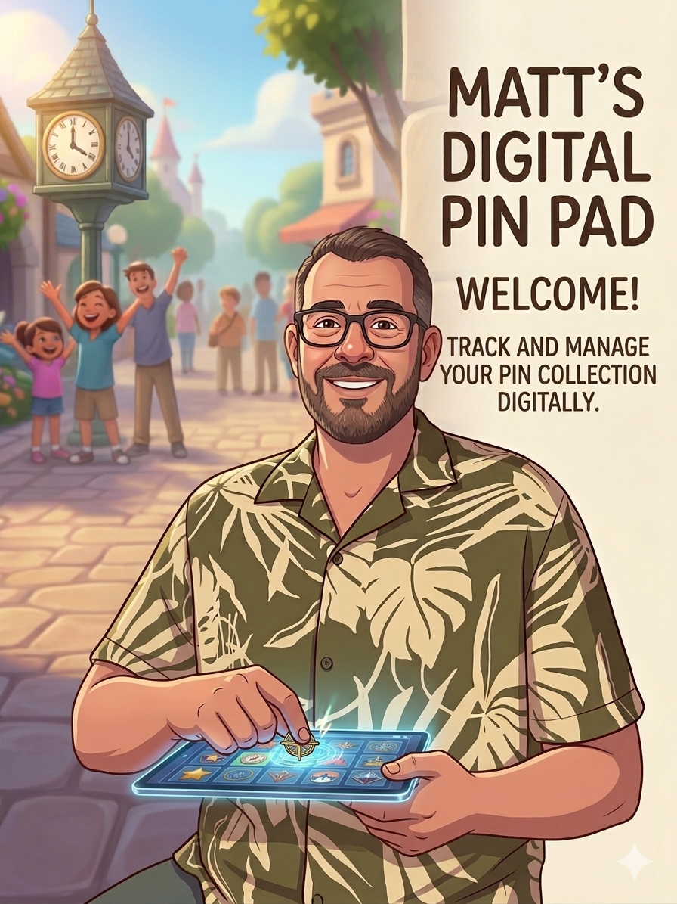

This started out as a fun personal project to keep track of my own collection, but I figured others who enjoy pin trading might find it useful, too. Whether you casually trade for your favorites or meticulously buy and swap to finish off a whole series or complete set, I hope these tools help you manage your boards!
A quick heads-up: this site isn't overly fancy and will likely change over time as new things are added.
All of your collection data is stored locally right in your browser's cache, which means it is tied directly to the device you are currently using. Be sure to use the export tools to save your progress as a PDF or download your data as you go so you never lose your hard-earned collection!